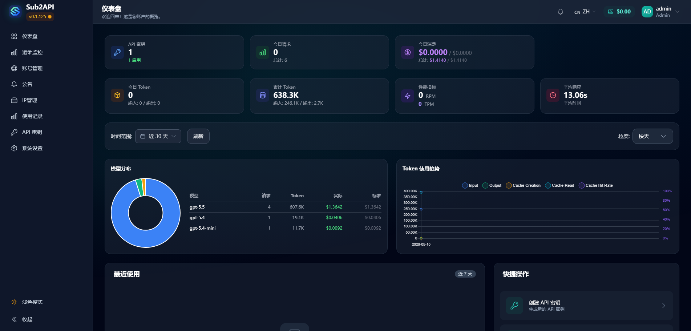

AI 在研发场景中的价值已经比较清晰
当前更适合先落地的不是泛泛聊天，而是研发链路里的具体工作：读代码、查问题、补测试、写 SQL、整理接口和生成说明。ChatGPT/Codex 可以承担一部分重复分析和草稿工作，让研发人员把时间更多放在判断、设计和验证上。
- 减少代码理解、资料整理、排错定位中的重复耗时。
- 辅助补齐边界用例、异常路径和变更影响点。
- 把零散问题整理成更清晰的代码说明、接口说明和排查记录。
把研发人员已经在用、确实能提升效率的 ChatGPT/Codex 纳入公司统一入口。通过 Sub2API 管理账号池、API Key、额度和 IP 边界，让工具从个人分散使用变成可预算、可分配、可停用的内部研发资源。
当前更适合先落地的不是泛泛聊天，而是研发链路里的具体工作：读代码、查问题、补测试、写 SQL、整理接口和生成说明。ChatGPT/Codex 可以承担一部分重复分析和草稿工作，让研发人员把时间更多放在判断、设计和验证上。
首期只面向研发相关岗位，场景清楚、需求集中，也更容易根据实际使用量判断账号数量和额度分配是否合理。
建议采用 ChatGPT/Codex + Sub2API 的方式先落地：购买少量 ChatGPT 20x 账号，导入 Sub2API 号池后向技术部门分发 API Key。员工使用方式保持简单，管理侧能看到额度、用量和状态，后续再按真实消耗决定是否增加账号。
Artificial Analysis 的 Intelligence Index 用来观察模型在数学、科学、编码、推理等多类任务上的整体水平。当前公开数据中，Claude Opus 4.8 与 GPT-5.5 位于前列，可作为选择 ChatGPT/Codex 主线时的外部参考。
Coding Index 主要看模型在代码相关基准上的表现，和本方案的使用对象更接近。当前公开数据中 GPT-5.5 位于第一，说明选择 ChatGPT/Codex 作为研发工具主线有较强的能力依据。
DeepSWE 更接近日常研发里的真实问题：理解仓库、定位原因、修改代码、跑通验证。官网首页默认表格显示，GPT-5.5 [xhigh] 的 Pass@1 为 70% ±3%，同时也展示了 Claude、Gemini、DeepSeek、GLM 等模型的横向对比。
结论口径：这次不做多模型采购，榜单只用于说明为什么先选择 ChatGPT/Codex 作为研发工具主线。正式采购前建议复核一次最新公开数据。
方案尽量保持轻：一台海外云服务器部署 Sub2API，接入 2-3 个 ChatGPT Pro 账号，再向技术部门分发内部 API Key。
价格按 阿里云公开价格页 和 OpenAI 价格页 估算，正式采购前以实际下单页为准。
账号来源会影响接入速度、成本和后续维护。考虑到当前需要尽快落地，建议首期优先采用现有相对稳定的第三方代充渠道，先把账号接入 Sub2API 统一分发；官方直购可作为后续长期路径继续评估。
正式采购前以 OpenAI 官方支持地区 和公司内部合规意见为准，首期按内部研发工具管理，不做公众开放或对外销售。
Sub2API 的价值是把订阅账号池变成可分发、可限额、可停用的内部资源。它适合做账号池和额度管理，不把它包装成完整的办公平台。

这套方案不改变研发人员的主要工作流。员工继续在 Codex/Cockpit 里使用，只是入口从个人账号改成公司统一发放的 URL 和 Key。
Sub2API 作为统一入口，由一个管理员账号负责账号采购、续费、导入号池和健康状态维护；再按部门或小组设置管理账号，负责组内 API Key 的发放、监控和后续调整。
额度不做平均分配，先给各小组基础额度，再根据实际消耗和岗位需求做倾斜。这样能避免高频使用人员不够用，也能减少低频账号长期占用预算。
服务只用于技术部门内部研发场景，不开放公众注册，也不做 Key 对外销售。统一入口的价值，是把账号、权限、额度和停用规则放到可管理的位置。
Sub2API 本身资源占用不高，20 人左右使用可以先选择海外低配云服务器，把主要预算放在 ChatGPT Pro（20x）账号上。首月先按 2-3 个账号估算，后续根据 Key 消耗再调整。
估算基于 ChatGPT Pro $200/账号/月、阿里云海外轻量服务器公开低配价格；未包含第三方代充溢价、税费和汇率波动。